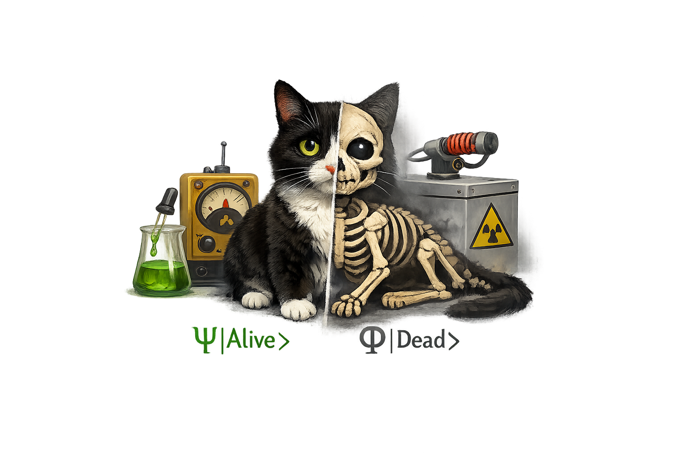

Erwin Schrodinger is a famous Austrian physicist but he is most famous for something he never actually did: A thought experiment with a imaginary cat. He placed a cat inside a cealed box with a device that has a 50% chance to kill the cat. An atom is placed and the device is triggered by the decay of atom. If the atom decays, the device will triggered and kill the cat, if the atom does not decay, the cat will be alive. For the next hour what will be the situation of the cat, Common sense suggest either the cat is alive or dead both have fifty-fifty chance to occur, but Schrodinger point out that according to quantum mechanics at the instance before the box is opened, the cat is in a superposition of being both alive and dead at the same time, cause the atom will be in a superposition state until it's measured being both decay and not which can trigger and not to trigger the device, It is when the box is opened we see a single definite state, until then the cat is in a blur of probabilities. It's so sophesticated and counterintuitive that he abondoned the theory and turned to writing about biology. As absurd as it may seem though, Schrodinger's cat is very real, It's essential, If it weren't possible for quantum objects to be in two states at once, The computer you are using to read this would not exist, The quantum superposition is a consiquence of the dual particle and wave nature of everything. A cat can't show superposition because its too big and it's wavelength is too small that we can't detect, but an electron is very small and its wavelength is big enough to show superposition. The double slit experiment is a good example of superposition, when electrons are fired at a barrier with two slits, they will pass one by one like a particle but eventually they will create an interference pattern which is a property of wave, Cause the electron is not going through any one of the slit but it is going through both the slits at the same time, and it is only when we try to measure the electron's superposition collapse and shows up as a particle going through one of the slits.
Superposition of states also leads to modern technology, An electron near the nucleus of an atom exists in a spread out wave-like orbit now a days it is describes as an electron cloud. When we bring two atoms together the electron don't need to choose just one atom but are shared between them. This is how some chemical bonds form, An electron in a molucule is not just on an atom A or atom B but on atom A+B. As atoms increase the electron spreads out more That's why it can be more precisely be said as an electron cloud. Ionic Bond-- If one atom is really strong it can pull one or more electrons off from another atom. Then you will end up with one neagatively charged ion and one positively charged ion. The attraction between these opposite charges is called an ionic bond. Covalent Bond-- atoms share their electrons eachother each atom is attracted to the shared electrons in between them. eg: protiens, DNA are held together of this covalent bond.
Group of atoms share electrons covalently are called molecules, They can be small eg:Oxygen only two atoms or they can be really big eg: Human chromosome 13 each one have over 37 billion atoms.
A chemical bond formed through the transfer of one or more electrons from one atom to other. The electrons generally transfer from an atom with low localization energy to an atom with high localization energy.
A strong chemical bond formed when two atoms share pair of valance electron to achieve stability.
All natural systems tends to adapt a state of lowest energy. Like the river flowing in one direction, from high ground to lower ground
Hydrogen Atom consists of one electron and one proton-- As read earlier the electrons forms a cloud around the
nucleus, The shape of this cloud is determined by the schrodinger equation. The hydrogen atom by itself will be in
its lowest energy state, called the ground state, when two hydrogen atoms get close since, the electrons are both
negatively charged first of all both atoms repel each other but the electron of Atom 1 also starts to get attracted
by the positive charge of the proton in hydrogen Atom 2, similar the electron of Atom 2 starts to get attracted by
the proton of Atom 1, So the electron of each of the 2 atoms tend to get pulled slightly to the other one's proton
and if they get close enough the clouds began to spread to the space between them covering both atoms. If atoms get
too close, then the proton begin to repel each other, so there is a "sweet spot" bond distance between the atoms
that results in lowest potential energy.
Why They Get Attracted At First Place--- There are multitude of interactions happening here, What
happens to the entire system is determined by the total energy of the system. We need to take account the
following:
-- The Kinetic energy of each atom
-- The potential energy between the two protons
-- The potential energy between two electrons
--The potential energy between each electron and each proton.
Thw sum of the possible outcomes of kinetic and potential energy of this system in quantum mechanics is reffered to
the Hamiltonian, represented by H when we plug in the hamiltonian to indipendent schrodinger equation, you can solve
to get possible values for energy. When the two atoms go from far apart to being close together and get in to their
lowest energy state that's the sweet spot and this sharing between two atoms is called covalent bond.
Schhrodinger equation-- H^ψ=Eψ, Pauli exclusion principle -- Two or more fermions(like electrons) cannot occupy the
same quantum state simoultaneously in one system
These two principles together can show the precise numbers that
result in the lowest potential energy of chemical systems.
The electron aren't bound to a particular atom but are shared among vast number of atoms at the same time extending over a large amount of space, this gigantic superposition of states determines the ways electrons moves through the material whether it's a conductor, insulator or a semiconductor. Knowing how electrons are spread among atoms let us precisely control the properties of semiconductor materials like silicon. Combining different semi conductors in the rigth way allows us to make transistors on a tiny scale millions on a single computer chip those chips and their spread out electrons power the computer. At a very deep level, The internet ows it's existance to a Austrian physicist and his imaginary cat